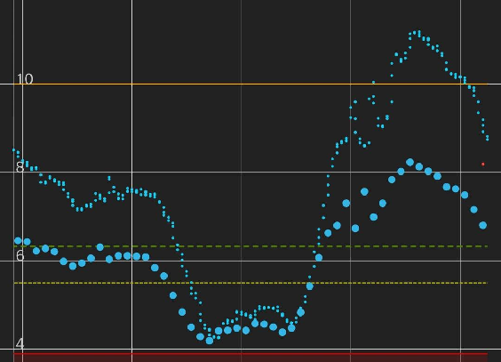
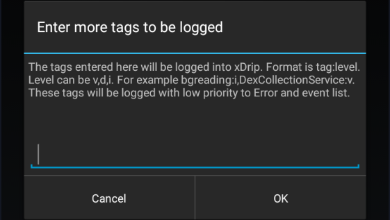

Less Common Settings

Settings
Less Common settings
More xDrip+ settings are available in less common settings.
If you can't find the setting you're looking for, keep in mind you can use the search lens from the main settings menu.
Extra Status Line⌁
Top left of your main graph you can see the standard status line.
This menu allows you to add extra information in this area.
Extra Status Line
Options for the extra line
You need to enable the extra status line to add extra information.
Extra Status Line 
Additional text status
You can make selected statistics to be calculated on the last 24 hours. By default they're starting at midnight.
Sliding Window
Use last 24 hours instead of time since midnight for statistics
There is a long list of available extra information you can display.
Only select those you really need to see every 5 minutes.
Average 
Today's average value
A1c DCCT
A1c estimation in DCCT format (%)
A1c IFCC
A1c estimation in IFCC format (mmol/mol)
In percentage
Percentage of values in range
High percentage
Percentage of values above range
Low percentage
Percentage of values below range
Standard deviation
Show standard deviation of values
Total carbohydrate
Show treatment carbohydrate total
Total insulin
Show treatment insulin total
External status
Display status from other apps like AAPS
Pump status
Display pump status information if available
Carb/Insulin ratio
Show treatment Carb/Insulin ratio
Packet capture percentage
Show percentage of sensor readings received
Realtime packet capture percentage
Percentage of sensor readings received in realtime (non-backfilled). G5 native mode only.
Accuracy evaluation
Show accuracy evaluation from last 3 days
Time
The current time
Calibration data (long)
Show slope and intercept in long form
Calibration data (short)
Show slope and intercept in short form
Calibration plugin
Show slope and glucose data from the active plugin
You can also add this extra information on your widget.
Show on widget
Also show the extra status line on the widget
Advanced Calibration⌁
See the dedicated section.
Advanced calibration
Extra options relating to calibrations
Bluetooth Settings⌁
See the dedicated section.
Bluetooth settings
 Advanced Bluetooth settings
Advanced Bluetooth settings
blueReader Settings⌁
Settings for the pioneer Libre bridge device from Sandra.
blueReader settings
Advanced blueReader settings
Advanced Settings for Libre 2⌁
Show additional information for Libre 2 sensors
Advanced settings for Libre 2
Display raw values on the main graph
Show raw values in graph
Switch on to show the raw values on the graph

Show more information in status
Show sensor infos in status
Switch to on to show additional sensor information in status for Libre 2 sensors
Aggressive Service Restarts⌁
Enabling this provokes a collector restart when detecting missing data. This can be useful if you have connection problems.
Aggressive service restarts 
Repeatedly restart the collection service at any hint of missing data. Enable only if you are getting data loss.
Interpret Raw Values⌁
Display data when not available on the Dexcom receiver.
Interpret raw values
If using share, xDrip+ will display values when they are normally hidden on the receiver
Extra Logging Settings⌁
Extra Logging Settings
These options are not used anymore.
Enable remote logging
Store logs for troubleshooting
Adding extra tags is useful for debugging as it will add specific traces in the log.
Extra tags for logging
You need to know what you want to debug and set the correct level. Make sure to put valid tags to avoid xDrip+ crashing.

Show Data tables⌁
This feature is extremely useful if you calibrate using the xDrip+ algorithm (non native).
It will add two entries in the drawer menu for visualization of calibration and data tables.
Show Data tables
Show calibration and BG datatables in the app drawer
Note: Calibration graph will not show in native mode.
Display Bridge Battery⌁
You can display your Bluetooth bridge battery level on the main view. This also applies to Libre Bluetooth bridges.
In follower mode it will most probably display the master phone battery level rather than the bride itself.
Display Bridge Battery
Choose to display the bridge battery level

Disable Battery Warning⌁
Disable battery warnings for bridges
Disable Battery Warning
Disable the warning for low transmitter battery state on the home screen (only relevant to DIY receivers)
Database automatic maintenance⌁
Save Database Daily will actually export the database file every day before doing cleanup. This will use a large amount of your device memory and is not recommended.
Database exports will be saved in the same folder than manual exports: /storage/emulated/0/xDrip or Internal Storage/xDrip.
Save Database Daily
Allows the daily intent service to save the database before purging
Glucose retention⌁
Glucose retention will automatically delete data older than the number of days selected.
Zero means don't delete anything (recommended). You can use 90 days if you use a cloud backup like Nightscout, so that you will still have all statistics available in xDrip+.
Glucose retention
Erase data older than this many days. 0 = don't erase anything.
Other Miscellaneous Options⌁
See the dedicated section.
Other misc. options